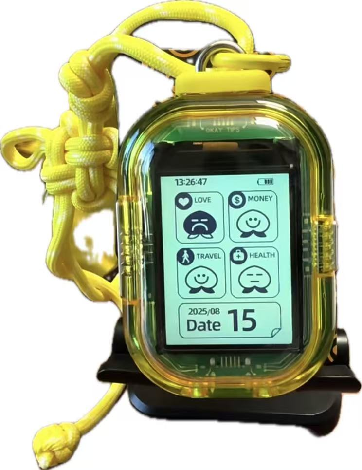

✦ ✧ ✦
A SPECIAL DAY FOR YOU
亲爱的林璐
生日快乐！
♡
今年接触了代码，觉得生日网站这个主意很好
于是有了这个页面。或许有点简陋，请不要嫌弃。
接下来请开始尽情探索吧！
created by sleeping ♡
✧ ✦ ✧
A LITTLE SURPRISE FOR YOU
一岁一礼
祝你 生日快乐
记得开启音乐食用哟！
HAPPY BIRTHDAY
叮咚！你有一份生日礼物待查收。
OUR LITTLE MEMORIES
有些瞬间过去很久，想起来还是会开心。
点开照片，重新走进那一天。
三张照片，三段属于我们的回忆
谢谢你成为我生活里很重要的一部分 ✧
OUR LITTLE UNIVERSE
点亮星星，看看藏在里面的话。
已经点亮 0 / 3 颗星星
每一颗星星，都藏着一句想对你说的话。
A LITTLE GIFT FOR YOU
听说，寿星今天会有特别的好运气。
准备好了吗？点击旋钮，扭出你的生日礼物。

这份礼物，是专门为你准备的小小心意。
希望你拆开的时候，会有一点点惊喜。这个是电子求签机！好像也有帮助选择困难症做出选择的功能！也希望以后的每一天我们璐meme都能摇出上上签！
A LETTER TO OUR FUTURE
有一封信，想留给未来的你。
A LETTER FOR YOU
这里留给我最想对未来的你说的话。
如果你正在读这封信，那么恭喜你又成功解锁了一个新年龄！虽然我不知道未来的你会是什么样子，是不是已经变成了一个更加成熟、更加理性、能够从容处理各种麻烦的大人，但我希望，无论你变成什么样子，都还保留着现在的快乐和自由。
说起来，我们认识也有三年了。三年好像不算特别长，可是已经足够让一个人从陌生人变成生活里很自然的一部分。自然到有时候，我甚至想不起我们最初是怎么认识的，也想不起第一次和你说话时究竟是什么场景。那些最开始的记忆反而模糊了，留下来的却是很多零零碎碎的小事。
我觉得人和人的相遇确实是一件挺奇妙的事。我们出生在不同的家庭，有各自的成长经历，原本可以沿着完全不同的轨迹生活，却偏偏在某个时间、某个地方认识了彼此。后来一起吃饭、一起聊天、一起经历考试和焦虑，一起抱怨生活里那些大大小小的破事。
如果没有遇见你，我的人生当然也会继续向前走，但其中一些很具体的快乐，大概就不会存在了。
所以我一直很庆幸，认识了你，也认识了欣妮。你们让我的高中不再只是一个人埋头往前赶的日子，而是多了很多可以分享的事情。那些原本很难熬的时刻，因为有了可以说话、可以一起笑的人，好像也就没有那么难了。
以后我们可能会去不同的城市，认识不同的人，忙着各自的学业、工作和生活。也许有一天，我们不能再像高中或大学这样，想见面就见面，想聊天就随时跑去找对方；也许以后再聚在一起时，我们会发现彼此的生活已经发生了很多变化。
甚至有一天，当我们回头看现在，会觉得当年那些烦恼其实没什么大不了的，也会觉得当年认真讨论过的某些事情，现在已经有了完全不同的答案。
但我希望，即使到了那个时候，我们仍然可以坐在一起，聊一聊最近发生的事情，分享一些没有什么实际意义但就是很好笑的八卦，偶尔翻出过去的照片，感叹一句：“天啊，我们当时怎么是这个样子的！”
我希望我们以后还能一起走过很多很多个秋天。
当然，作为朋友，我希望你可以一直喜欢这个世界里值得喜欢或自己热爱的东西，也希望你在遇到不那么美好的事情时，不必总是一个人消化一切，回头看看朋友总是在身旁。
希望你有很多快乐，很多自由，很多值得期待的明天。
19岁生日快乐！
永远祝福你的朋友sleeping ♡